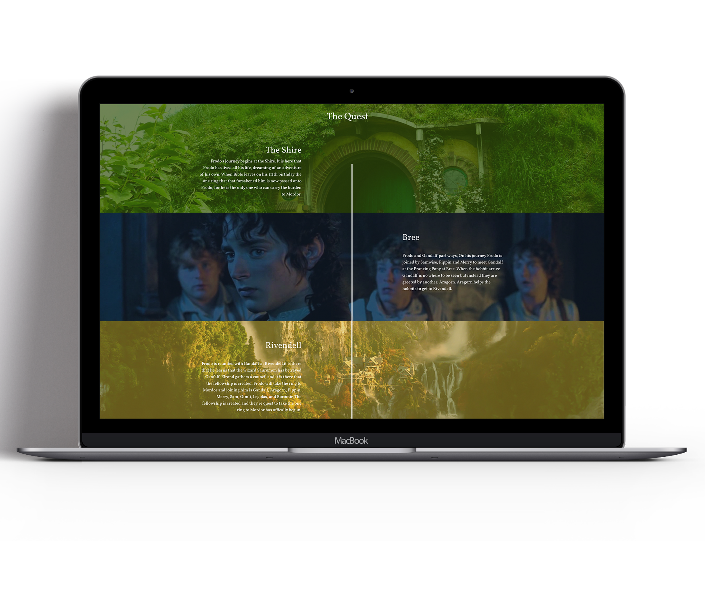
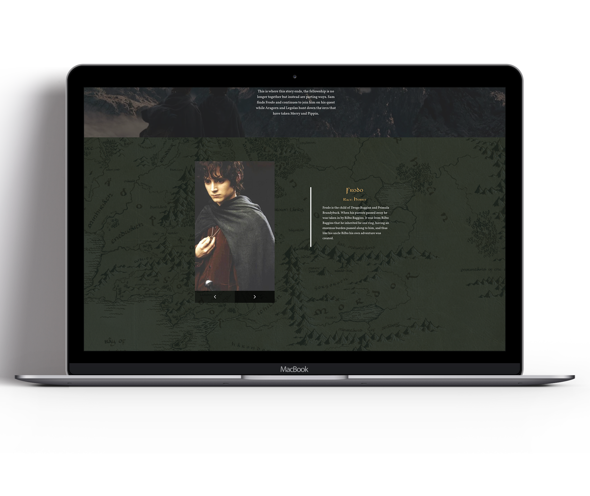

The purpose of the Lord of the Rings project was to bring attention to a fake campaign bringing back a remastered version of the first installment to the Lord of the Rings trilogy. This project was especially fun for me since I am a huge fan of the movies. It was also a great opportunity for me to face some hurdles in motion design and creating a clean design look to something that looks and feels so medieval and old fashioned.
The end result of this project was two videos and one page website promoting the movie in the an extremely visual way. the scenery in the films is one of it's best features so to get a chance to work around creating a website on something so visually pleasing was an extremely fun task.
